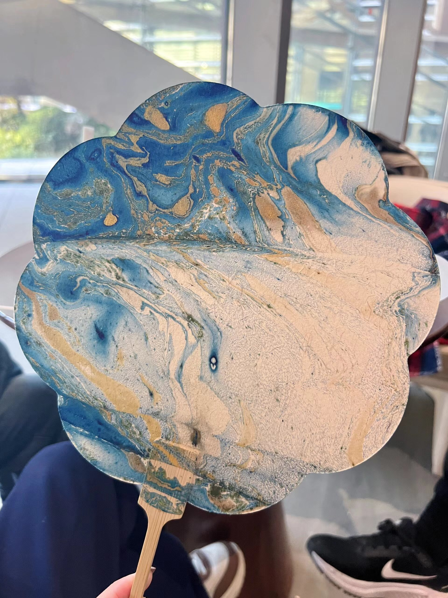

漆扇是一种特殊的扇子，其特点在于使用了大漆作为扇骨的处理和修饰材料。
漆扇的起源可以追溯到中国古代，早在东汉时期，漆器就已经成为一种重要的工艺品。而扇子作为一种常见的日常用品，很自然地与漆器相结合，形成了漆扇这一独特的艺术形式。 在古代，漆扇不仅是用来扇风降温的工具，还常被用来遮面。扇面通常由竹篾片编织而成，上面涂抹着红漆和黑漆，形成规律的几何线条，这些线条类似于青铜器上的回形纹和矩形纹，展现出精美的工艺和独特的美学价值。漆扇也是文人折扇中的一个重要门类，它不仅体现了中国传统美学，还流露出大漆工艺的精湛技艺。其以扇子为载体，运用漆器工艺制作而成，展现了中国传统文化的瑰丽和精致。
漆扇的制作技艺在唐代达到了巅峰，成为了宫廷和贵族的珍贵收藏品。